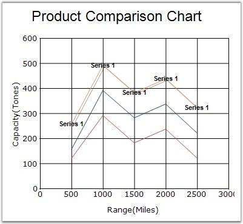

Gets or sets a font object used for drawing the data point labels.
|
Details | |
|
Possible Values |
Specifying font face, size and style. |
|
Default Value |
· FontStyle - Regular · Face Name - MicroSoft Sans Serif · Size - 8.25 |
|
2D / 3D Limitations |
No |
|
Applies to Chart Element |
All series and points |
|
Applies to Chart Types |
All Chart types |
Here is some sample code.
Series Wide Setting
|
[C#]
this.chartControl1.Series[0].Style.DisplayText = true; this.chartControl1.Series[0].Style.Font.Bold = true; this.chartControl1.Series[0].Style.Font.Facename = "Arial"; this.chartControl1.Series[0].Style.Text = "Series 1"; |
|
[VB.NET]
Me.chartControl1.Series(0).Style.DisplayText = True Me.chartControl1.Series(0).Style.Font.Bold = True Me.chartControl1.Series(0).Style.Font.Facename = "Arial" Me.chartControl1.Series(0).Style.Text = "Series 1" |
Specific Data Point Setting
|
[C#]
//font style set for first data point this.chartControl1.Series[0].Styles[0].Font.Bold = true; this.chartControl1.Series[0].Styles[0].Font.Facename = "Arial"; |
|
[VB.NET]
'font style set for first data point Me.chartControl1.Series(0).Styles(0).Font.Bold = True Me.chartControl1.Series(0).Styles(0).Font.Facename = "Arial" |

Figure 137: Column Chart with Text
See Also